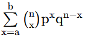
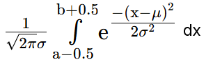

Approximation der Binomialverteilung (Ziehen mit Zurücklegen)
Die W'keit, aus einer Urne in einem Zug eine rote Kugel zu ziehen, sei p (0<p<1).
Dann ist die W'keit P gemäss Binomialverteilung, in n Zügen mit Zurücklegen mindestens a und höchstens b rote Kugeln zu ziehen
P =

mit q = 1-p. P wird durch die Normalverteilung mitP ≈

approximiert (Grenzwertsatz von de Moivre und Laplace).Erwartungswert μ = n⋅p , Varianz σ2 = n⋅p⋅q. Die Approximation ist zulässig, falls σ2>9.
Approximation n = , p =
μ = , σ2 = ,
σ =
- Anzahl Züge (n>19):
- Einzelw'keit p (0<p<1):
- a: b≥a:
Resultate
P(≤X≤) ≈Nach Binomialverteilung:
P(≤X≤) =
Beispiel:
Wie gross ist die Wahrscheinlichkeit, in 600 Würfen
mit einem Würfel zwischen 80 und 120 mal die "6" zu würfeln (Grenzen inklusive)?
n = 600, p = 1/6, a = 80, b = 120.
Zur Binomialverteilung mit Histogramm
Zur Normalverteilung